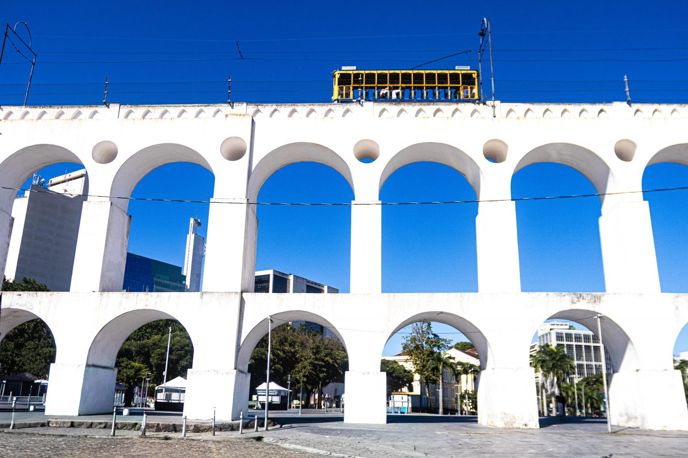

Sobre os Arcos da Lapa
Os Arcos da Lapa são um dos principais cartões-postais do Rio de Janeiro. Localizados no bairro da Lapa, foram construídos no século XVIII para funcionar como um aqueduto, levando água do Rio Carioca para a região central da cidade. Atualmente, os Arcos são um importante símbolo histórico e cultural do Rio de Janeiro.
Conheça os Arcos

Localização
Os Arcos da Lapa estão localizados no bairro da Lapa, na região central da cidade do Rio de Janeiro.